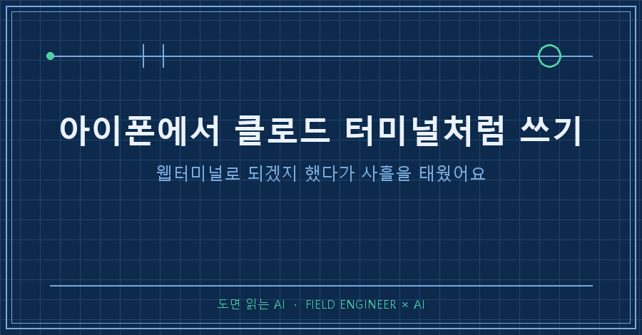
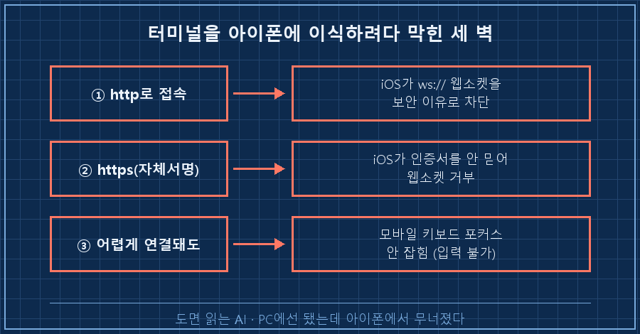
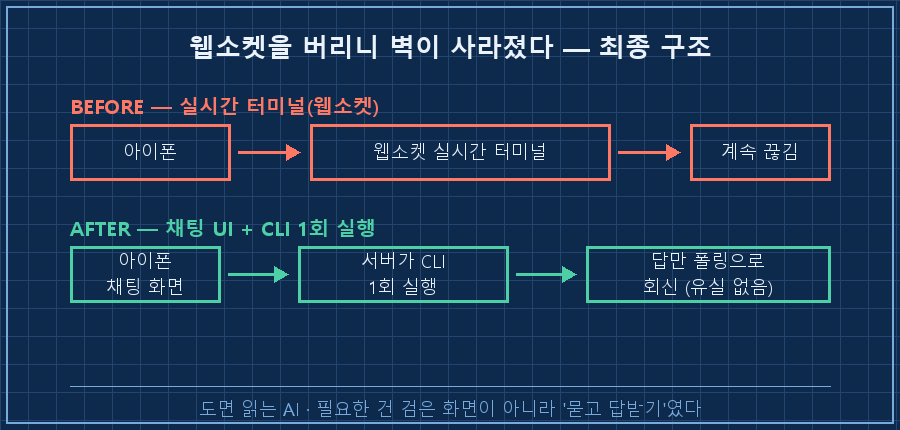

먼저 결론부터 드릴게요.
아이폰에서 PC의 AI 도구를 터미널 화면 그대로 띄우려는 시도는, 거의 다 iOS의 웹소켓 벽에서 막혀요. 저는 그 벽에 대여섯 번 부딪히고 나서야 방향을 틀었습니다.
답은 "터미널을 모바일에 억지로 밀어넣기"가 아니라 카카오톡 같은 채팅 화면으로 감싸는 거였어요.
오늘은 제가 뭘 시도했고, 어디서 왜 깨졌고, 결국 뭘로 착지했는지를 순서대로 풀어볼게요.
저는 제조 현장에서 자동화랑 제어를 15년째 만지는 엔지니어예요.
설비 옆에서 로그 뒤지고 스크립트 짜는 게 일상이라, PC 앞을 떠나 있는 시간에도 그 도구를 손에 쥐고 싶었어요.
그래서 "내 노트북의 AI CLI를, 밖에서 아이폰으로 그냥 쓰자"가 이번 삽질의 출발점이었습니다.
1. 왜 터미널을 아이폰으로 옮기려 했나
이유는 단순했어요.
PC에서 쓰는 AI 도구가 터미널 명령으로 도는 거였거든요.
질문 하나 던지고, 이어서 묻고, 파일도 훑게 하고. 이걸 자리 비운 사이에도 폰으로 하고 싶었어요.
가장 쉬워 보이는 그림은 이거였어요.
PC에 웹터미널을 띄우고 → 아이폰 브라우저로 접속하고 → 화면에 터미널이 그대로 뜨면 끝.
"반나절이면 되겠지" 했죠. 그 낙관이 사흘짜리 삽질의 시작이었습니다.

2. ttyd와 xterm.js — PC에선 됐는데 아이폰에서 무너졌어요
첫 도구는 웹터미널을 띄워주는 ttyd였어요.
설치하고 실행하니 PC 브라우저에선 터미널이 그대로 뜨더라고요. 여기까진 순조로웠어요.
문제는 아이폰이었어요.
ttyd는 화면을 xterm.js라는 걸로 그리는데, 이게 iOS 사파리·크롬에서 웹소켓 연결부터 막혔어요.
웹소켓이 뭐냐면, 서버랑 브라우저가 실시간으로 계속 주고받는 통로예요. 터미널처럼 글자가 실시간으로 흘러야 하는 화면엔 이게 필수인데, 여기서 세 번 연속으로 깨졌어요.
① http로 열면 → iOS가 ws:// 웹소켓을 보안 이유로 아예 차단
② https(자체서명) → iOS가 그 인증서를 안 믿어서 웹소켓 거부
③ 어렵게 연결돼도 → 키보드 입력 포커스가 안 잡힘 (모바일 키가 안 먹음)특히 세 번째가 압권이었어요.
화면은 떴는데 아이폰 키보드를 눌러도 글자가 안 들어가요.
xterm.js가 입력을 숨은 텍스트칸으로 받는 구조라, 모바일에선 그 칸에 포커스가 안 잡히더라고요. 화면만 있고 타이핑이 안 되는 반쪽짜리였죠.
3. 접속 경로도 하나씩 벽이었어요 (포트포워딩·Tailscale·Cloudflare)
화면 문제와 별개로, "밖에서 내 PC에 어떻게 닿느냐"도 각각 벽이었어요.
정리하면 이래요.
| 접속 방법 | 됐나 | 걸린 벽 |
|---|---|---|
| 공유기 포트포워딩 | 부분 | 새 규칙이 재부팅 전엔 반영 안 됨, 외부 포트 번호 충돌 |
| Tailscale | ○ | 접속은 되는데, 위의 xterm.js 문제는 그대로 |
| Cloudflare 터널 | ○ | 무료판은 껐다 켜면 주소가 매번 바뀜 |
포트포워딩은 공유기에서 규칙을 넣었는데 반영이 안 돼서 한참 헤맸어요.
알고 보니 외부 포트 번호가 다른 기기랑 겹쳐 있었고, 규칙 자체가 재부팅 전엔 안 살아나는 상황이었어요. 원격으로 붙어 있던 터라 재부팅을 못 걸어서 그 밤엔 포기했고요.
Tailscale은 좋았어요.
PC랑 아이폰을 같은 사설망처럼 묶어줘서 접속 자체는 깔끔했어요. 근데 접속이 됐다고 화면이 뜨는 건 아니잖아요. xterm.js 벽은 그대로였죠.
Cloudflare 터널은 정식 https 주소를 공짜로 내주는 게 매력이었는데, 무료판은 프로세스를 재시작할 때마다 주소가 바뀌었어요. 매번 새 주소를 폰에 다시 넣는 건 못 할 짓이었고요.

4. 전환점 — 터미널을 포기하고 채팅으로 감쌌어요
며칠을 부딪히고 나서 관점을 바꿨어요.
"터미널 화면을 모바일에서 살리자"가 아니라, 터미널을 아예 버리자로요.
핵심은 이거였어요.
저는 사실 터미널의 검은 화면이 필요했던 게 아니라, "질문 보내고 답 받는 것"이 필요했던 거예요.
그럼 굳이 실시간 터미널을 흉내 낼 게 아니라, 카카오톡처럼 말풍선으로 주고받는 채팅 화면이면 충분하잖아요.
그래서 그림을 이렇게 바꿨어요.
[기존] 아이폰 → 웹소켓 실시간 터미널 → 계속 끊김
[전환] 아이폰 → 채팅 UI(말풍선) → 서버가 CLI를 1회씩 실행 → 답만 회신서버는 AI 도구를 대화형(계속 켜두는 방식)이 아니라, 요청 한 번에 한 번씩 비대화형으로 실행하게 했어요.
질문이 오면 그때 CLI를 한 번 돌려서 답을 받아 말풍선으로 돌려주는 구조요. 이러니 실시간 통로(웹소켓)에 매달릴 이유가 사라졌어요.
결과는 바로 달라졌어요.
키보드 포커스 문제, 자체서명 인증서 문제, 백그라운드 전환 시 끊김이 한꺼번에 정리됐어요. 터미널을 흉내 내려다 생긴 문제였지, 채팅으로 감싸니 애초에 안 생기더라고요.
한 가지 더 손본 건 응답 받는 방식이었어요.
처음엔 답을 실시간으로 흘려보내려(스트리밍) 했는데, 아이폰을 백그라운드로 돌리면 그새 끊겨서 답이 유실됐어요.
그래서 서버가 답을 잠깐 들고 있고, 화면이 짧은 간격으로 "다 됐어요?" 하고 물어보는 방식(폴링)으로 바꿨어요. 앱을 껐다 켜도 답이 안 날아가더라고요.
5. 그대로 따라 하려면 (2026년 8월 기준 골자)
제가 착지한 구조를 재현 가능한 순서로 정리하면 이래요. 특정 유료 서비스 없이도 됩니다.
1. 접속 경로부터 하나 고른다. 집·회사 안에서만 쓸 거면 같은 와이파이 사설IP로 충분하고, 밖에서도 쓸 거면 Tailscale로 PC와 폰을 묶는 게 제일 속 편해요. 고정 주소가 필요하면 Cloudflare는 무료판 말고 계정 등록판(주소 고정)으로 가야 합니다.
2. 화면은 터미널이 아니라 채팅으로 만든다. 검은 터미널(xterm.js)을 모바일에 이식하려는 시도 자체를 접으세요. 말풍선 입출력 페이지 하나면 됩니다.
3. 서버는 CLI를 비대화형 1회 실행으로 감싼다. 대화를 계속 켜두지 말고, 요청이 올 때마다 명령을 한 번씩 실행해 결과 텍스트만 회신하게 하세요. 이어지는 맥락은 "이전 대화 이어가기" 옵션으로 유지하면 됩니다.
4. 응답은 스트리밍 말고 폴링으로 받는다. 모바일은 언제든 백그라운드로 넘어가니까, 서버가 답을 잠깐 보관하고 화면이 주기적으로 확인하러 가는 방식이 유실이 없어요.
5. 확인 방법. 아이폰을 홈으로 한번 나갔다가 다시 들어와도 (a)로그인이 유지되고 (b)조금 전 보낸 질문의 답이 그대로 붙어 있으면 성공이에요. 이 두 개가 되면 터미널 없이도 밖에서 폰으로 쓸 수 있는 상태입니다.
자주 묻는 질문
Q. ttyd나 xterm.js가 원래 아이폰에서 안 되나요?
PC 브라우저에선 잘 돼요. 문제는 iOS가 웹소켓·자체서명 인증서를 까다롭게 다루고, 모바일 키보드가 xterm.js의 숨은 입력칸에 포커스를 잘 못 잡는 거예요. 데스크톱 접속용으론 그대로 두고, 모바일용만 채팅으로 따로 만드는 걸 권해요.
Q. 자체서명 인증서를 아이폰에 믿게 하면 되지 않나요?
설정 프로파일로 인증서를 설치해서 신뢰시키면 https 경고는 사라져요. 그런데도 저는 웹소켓 재연결 문제가 남았어요. 인증서를 심는 것보다, 웹소켓이 필요 없는 채팅 구조로 가는 게 근본 해결이었어요.
Q. 꼭 Tailscale이어야 하나요?
아니요. 같은 망에서만 쓰면 사설IP로 충분하고, 공유기 포트포워딩도 됩니다. 다만 포트포워딩은 규칙 반영·포트 충돌·재부팅 같은 변수가 많아서, 밖에서 쓸 거면 Tailscale이 손이 덜 가더라고요.
정리하면 이래요.
아이폰에서 PC의 AI를 쓰고 싶을 때, 터미널을 억지로 옮기려 하면 웹소켓·인증서·키보드 벽에 차례로 막혀요.
필요한 건 검은 터미널이 아니라 "묻고 답받기"였으니, 채팅 UI로 감싸고 CLI는 한 번씩 실행하는 구조로 바꾸면 그 벽들이 통째로 사라집니다.
밖에서 폰으로 내 PC를 붙여보려다 접었던 경험, 다들 한 번쯤 있으실 거예요.
그 삽질 기록은 makefield.ai에도 차곡차곡 정리해두고 있으니 편하게 구경 오세요.
---
태그: #아이폰클로드터미널 #아이폰웹터미널 #ttyd아이폰 #xtermjs웹소켓 #모바일AICLI #클로드코드모바일 #Tailscale원격접속 #Cloudflare터널 #자체서명인증서 #iOS웹소켓차단 #채팅UI만들기 #nodepty #웹터미널구축 #원격PC접속 #도면읽는AI